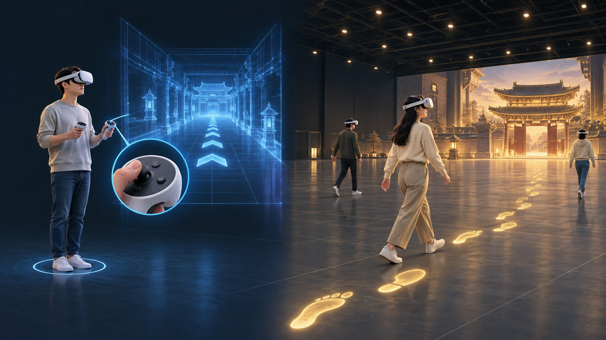

후백제 이야기를 함께 걷는 LBE VR
견훤,
천년의 귀환
공간을 걷고 · 동행자를 만나고 · 이야기에 참여하다
콘텐츠 기획 및 구현 발표
콘셉트 이미지
이동 방식의 차이
이동 조작을 익히는 대신, 익숙한 발걸음으로

스틱으로 이동하는 VR
우리가 선택한 자유 보행형 LBE
낯선 조작법에 적응이 필요합니다
몸과 화면의 이동 차이가 멀미를 유발할 수 있습니다
실제로 걸으면 가상 공간에서도 이동합니다
이동 조작을 익히는 부담을 줄입니다
AI 생성 개념 이미지 · 이동 방식 비교
LBE로 만들 수 있는 경험
넓은 공간에서, 함께 탐색하는 경험

공간을 탐색하다
관심 있는 장소로 이동하며
나만의 시선으로 둘러보기
대상에 다가가다
가까이 다가가 살펴보고
손을 뻗어 직접 상호작용
경험을 함께 나누다
동행자와 같은 장면을 보고
발견과 반응을 함께 나누기
AI 생성 개념 이미지 · 역사 탐방·전시·협동 체험 등으로 확장
걸어서 만나는 후백제 이야기 · 실제 프로젝트 화면
견훤, 천년의 귀환

01
설화 속 호랑이
견훤의 탄생 설화를 만나고
손을 내밀어 호랑이와 교감

02
성벽 위로 상승
동행자와 함께 발판에 올라
높아지는 시야와 공간감 체험

03
견훤과 서라벌
견훤을 만나 이야기를 듣고
서라벌 전투 장면을 감상
04
함께 돕는 낚시
낚시를 도우며 함께 참여하고
고래를 만나는 경험
킨텍스 현장 영상
플레이 영상
두 참가자와 관찰자 시점 · 1분 14초
슬라이드 쇼에서 영상 화면을 클릭해 재생
핵심 구현 · 실제 프로젝트 화면
이야기를 여러 사람이 함께 체험하게 만들기

01
손으로 이야기와 연결
두루마리를 직접 선택하며
이야기의 다음 장면으로 참여

02
동행자가 보이는 체험
같은 공간의 참가자를
아바타로 표현

03
함께 이어지는 이야기
참가자의 진행 상태를 확인하고
장면 전환과 체험 흐름을 제어

제작 결과
후백제 이야기를
함께 참여하는 경험으로
공간 이동 · 직접 상호작용 · 동행자 표현 · 회차 운영
감사합니다